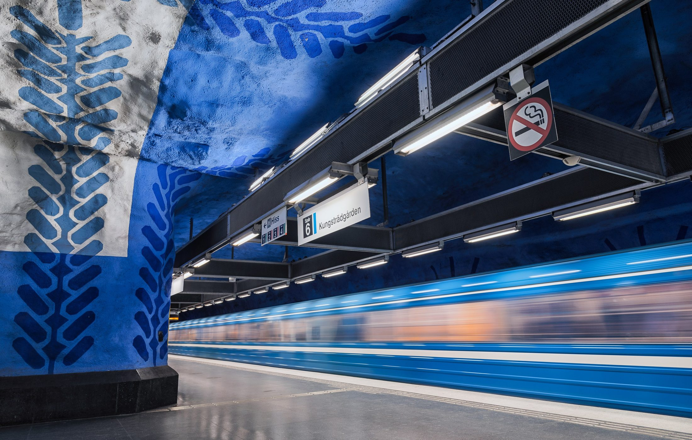
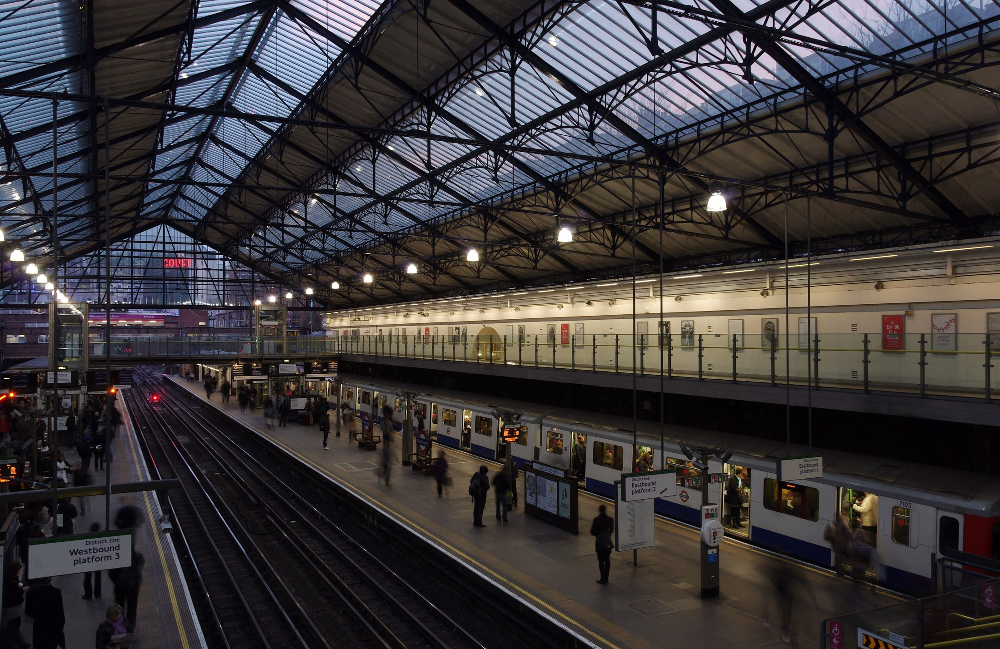
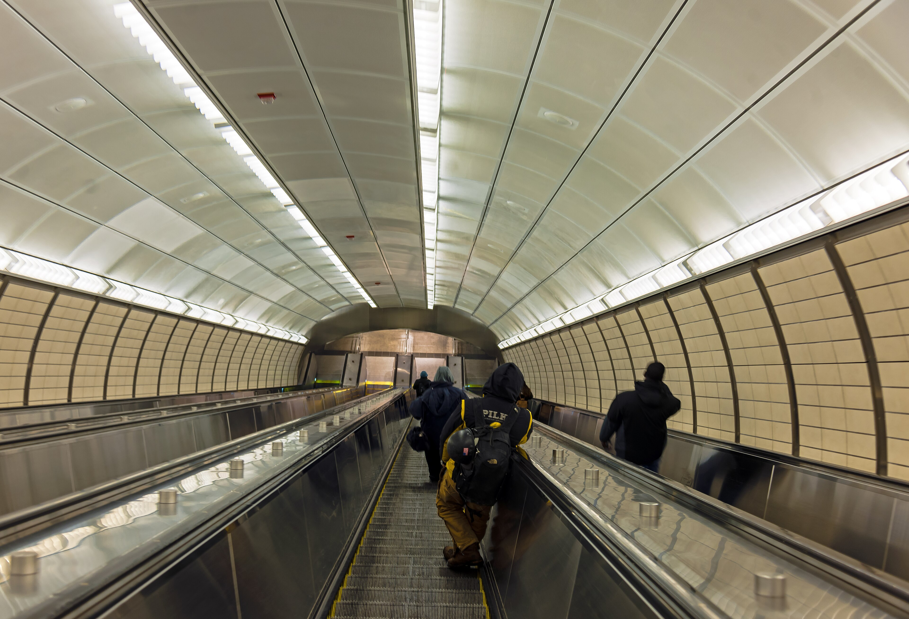
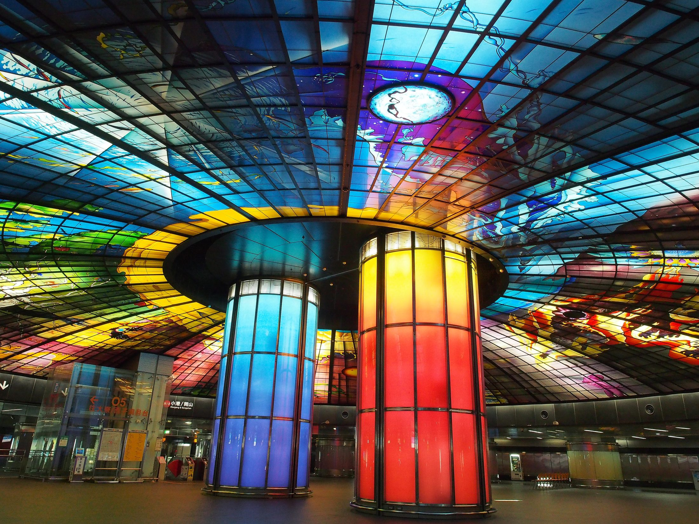
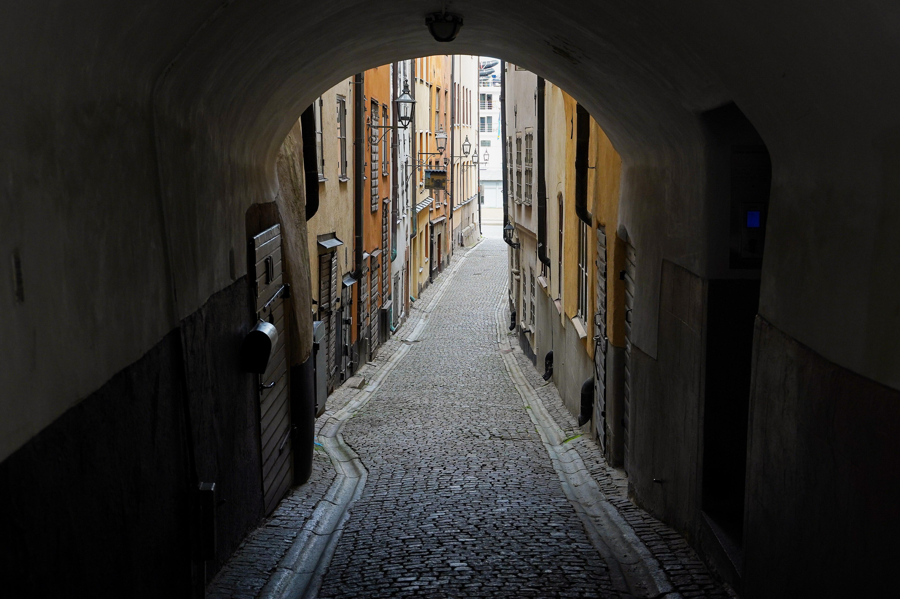
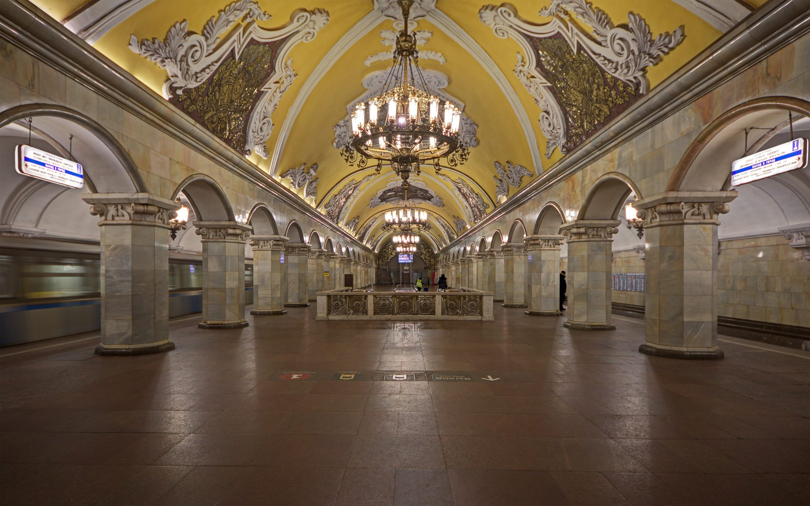

Layer 03 · Beneath
Underground
What the city hides, it hides beneath itself.
Scroll

01
Transit
Rivers of people
in steel pipes
Every ninety seconds a train exhales a crowd and inhales another. Nobody looks up. Down here the sky is a tiled ceiling and the stars are exit signs.
Photo · Unsplash
Beneath




02
Infrastructure
Cables thick
as memory
Water, power, data, sewage, secrets. The city's nervous system runs in the dark and asks for nothing except that you never think about it.
Photo · Tobias Reich

03
Roots
Older than the
streets above
Beneath the tunnels are the older tunnels. Beneath those, the foundations of a city no one remembers founding. Impossible cities are always built on possible ones.
Photo · Unsplash
Down here the sky is a ceiling and the stars are exit signs.Layer three, Underground